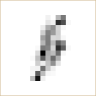

Due: Friday, Sept. 18.
In this lab you compute MAP estimates of an image from noisy data, and then from blurred noisy data. The prior model is a Gaussian Markov random field and the optimizer is gradient descent. The background is Chapter 5 of Foundations of Computational Imaging, on MAP estimation with Gaussian priors, and Chapter 4, on the GMRF prior. The notation here matches the book.
You will not hand-write the implementation. This page states the model, the math, and the exact signature of every function you need. Your job is to direct Claude, or another agentic AI, to write the PyTorch code from that specification, then run the experiments yourself, produce the required images and numbers, and explain what you see. You are graded on the specification you give, the checks you run to confirm the code is right, and your reading of the results.
The work is in two modules. Open them below.
Download both files before you start.
Source: image 23 of the Kodak Lossless True Color Image Suite, released for unrestricted use. Converted to grayscale by the same recipe you used in Lab 2.
levin09_kernels holding
levin09_kernel1.txt through
levin09_kernel8.txt. This lab uses kernel 1.
Source: A. Levin, Y. Weiss, F. Durand, and W. T. Freeman, "Understanding and Evaluating Blind Deconvolution Algorithms," IEEE CVPR 2009. The kernels were measured from real camera shake, and they are the standard test set for image deblurring.
From the shell, which is easier than saving from the browser:
wget https://cabouman.github.io/grad_labs/labs/resources/kodim23.pgm wget https://cabouman.github.io/grad_labs/labs/resources/levin09_kernels.zip unzip levin09_kernels.zip
A kernel file is plain text, with one row of the kernel per line, so you can also just look at one: levin09_kernel1.txt opens in the browser.
lab3.py. Use the labs conda environment
you built in Lab 2.lab3.py holds functions and nothing else. Run your
experiments from a separate script that imports it.float64. It keeps the cost
curves clean.for loop over pixels anywhere. Every operation is
a whole-array operation.
The image is kodim23.pgm on \([0,1]\). The prior is
quadratic with scale \( \sigma_x \). Each reconstruction starts at
\( x^{(0)} = y \) and uses the exact step size \( \alpha \) from
equation (11). There are two forward models: \( A = I \) for the
denoising experiment, and \( A \) equal to Levin kernel 1 for the
deconvolution experiment.
The table lists the settings for each hand-in item. Every experiment below points back to this table by its deliverable number, so you do not have to search the text for a number.
| Item | Experiment | \( A \) | Noise \( \sigma_w \) | \( \sigma_x \) | Iterations |
|---|---|---|---|---|---|
| D1, D2 | Forward, adjoint, and checks (Tasks 3a, 3b) | kernel 1 | none | — | — |
| D8 | Denoising (Step 7) | \( I \) | 0.05 | 0.01, 0.05, 0.25 * | 50 |
| D9 | Deconvolution (Step 8) | kernel 1 | 0.02 | 0.01, 0.05, 0.25 * | 50 |
* In both experiments \( \sigma_x = 0.05 \) is the good value, 0.01 over-regularizes, and 0.25 under-regularizes. The deconvolution uses less noise than the denoising, because the blur already removes most of the high frequency content. You may stop a run early when the per-iteration image change \( \mathrm{NRMSE}_n \) falls below 0.2%.
Let \( x \in \mathbb{R}^N \) be the unknown image, written as a column vector of its \(N\) pixels. The measurement is
$$ y = A x + w \ , \qquad w \sim N(0, \sigma_w^2 I) \ , \tag{1} $$where \(A\) is a known linear operator and \(\sigma_w\) is the noise standard deviation. This lab uses two choices of \(A\). One is a camera shake blur, which gives deconvolution. The other is the identity, which gives denoising. Step 2 writes both with the same function.
Recovering \(x\) from \(y\) means, in part, making \(Ax\) agree with \(y\). Every method in this lab does that by descending the squared error \( \| y - A x \|^2 \), whose gradient is \( -2 A^t (y - A x) \). So you need \(A^t\) as well as \(A\), and that is what this module builds. Module 2 adds the prior model and assembles the full cost.
The operator \(A\) is a blur, and blurring is convolution. Writing \(s\) and \(r\) for 2-D pixel positions and \(a\) for the blur kernel,
$$ (A x)_s = \sum_r a_r \, x_{s-r} \ . \tag{2} $$Use circular boundaries, so that an index running off one edge of the image wraps around to the other. That choice keeps the blurred image free of a dark border, and it makes the adjoint in Step 3 exact.
The kernel \(a\) is a measurement of real camera shake. Someone photographed a scene while holding the camera in their hands, and the path the camera traveled during the exposure was recorded. That path is the kernel. Here is the one you will use:

levin09_kernel1.txt, 19 by 19. Dark is large. The
picture uses a gamma of 0.45 so that the faint part of the trail is
visible.
The trail is the hand tremor. It is thin, because the camera was somewhere along it at every instant, and it is uneven, because the camera lingered at the turns. Nothing about it is symmetric, and Step 3 turns that fact into a test of your code.
Copy these two readers into lab3.py. Reading files is
not the point of this lab.
import numpy as np
import torch
import torch.nn.functional as F
def load_pgm(path):
"""Read a binary PGM image file.
path path to a P5 PGM file
returns (H, W) float64 tensor with values in [0, 1]
"""
with open(path, "rb") as f:
assert f.readline().strip() == b"P5"
width, height = map(int, f.readline().split())
assert int(f.readline()) == 255
raw = np.frombuffer(f.read(), dtype=np.uint8).reshape(height, width)
return torch.tensor(raw / 255.0, dtype=torch.float64)
def load_kernel(path):
"""Read a blur kernel from a text file.
path path to a kernel file, one row of the kernel per line
returns (Ka, Kb) float64 tensor, nonnegative and summing to 1
"""
return torch.tensor(np.loadtxt(path), dtype=torch.float64)
Now write the forward model itself.
def forward(x, a):
"""Apply the blur operator A of equation (2).
x (H, W) float64 tensor, the image
a (Ka, Kb) float64 tensor, the blur kernel, odd sized in both axes
returns (H, W) float64 tensor, A x
"""
Three requirements.
torch.nn.functional.conv2d, with no loop
over pixels.conv2d does not compute convolution. It computes
correlation, which is equation (2) with \(a_r\) replaced by
\(a_{-r}\). To get (2) you must flip the kernel in both axes before
you pass it to conv2d. If the kernel were symmetric this
mistake would change nothing and you would never find out. A camera
shake kernel is not symmetric, so the mistake reverses the blur trail
end for end, and every result after it is wrong.
Denoising uses the same function. When \(A\) is the identity, \(A\) is still a convolution: it is convolution with the 1 by 1 kernel whose only entry is 1.
a_identity = torch.ones((1, 1), dtype=torch.float64)
So you write one forward model and use it for both halves of the lab. Nothing later needs a special case for denoising.
\(A^t\), the transpose of the blur operator, is defined by the property
$$ \langle A x, v \rangle = \langle x, A^t v \rangle \quad \mbox{for all } x \mbox{ and } v \ . \tag{3} $$You will get \(A^t\) two ways, and then check that they agree.
The short way: let PyTorch do it.
Read (3) from left to right with \(v\) held fixed. The left side is a linear function of \(x\), and the right side says that this function is the inner product of \(x\) with \(A^t v\). The gradient of \(\langle x, A^t v \rangle\) with respect to \(x\) is \(A^t v\). So \(A^t v\) is the gradient of \(\langle A x, v \rangle\) with respect to \(x\), and computing gradients is what PyTorch already does.
def adjoint_autograd(v, a):
"""Apply A^t, obtained from forward() by automatic differentiation.
v (H, W) float64 tensor
a (Ka, Kb) float64 tensor, the same kernel passed to forward
returns (H, W) float64 tensor, A^t v
"""
x = torch.zeros_like(v, requires_grad=True)
return torch.autograd.grad((forward(x, a) * v).sum(), x)[0]
That is the whole thing, and nothing in it is specific to convolution. It gives the transpose of any linear forward model you write in PyTorch, however complicated, without deriving anything. Remember it. You will want it again later in this course.
The direct way, which you also write.
For circular convolution the transpose has a simple closed form. It is correlation with the same kernel,
$$ (A^t v)_s = \sum_r a_r \, v_{s+r} \ , \tag{4} $$
which is the sum in (2) with the sign of \(r\) reversed. In terms of
conv2d this is convenient. Since conv2d
computes correlation, forward flips the kernel and
adjoint does not.
def adjoint(v, a):
"""Apply the transpose operator A^t of equation (4).
v (H, W) float64 tensor
a (Ka, Kb) float64 tensor, the same kernel passed to forward
returns (H, W) float64 tensor, A^t v
"""
Task 3a. Look at what the two operators do. Load the image and kernel 1, then compute \(Ax\), \(A^t x\), and their difference. Display four images with the same gray scale over \([0,1]\): \(x\), \(Ax\), \(A^t x\), and \(Ax - A^t x\). For the difference image, add 0.5 before you clip, so that zero shows as mid gray. Also print the shape of the kernel and its sum.
The four images \(x\), \(Ax\), \(A^t x\), and \(Ax - A^t x\), and the shape and sum of the kernel. Add one sentence saying what the difference image shows about \(A\) and \(A^t\).
Task 3b. Check the code three ways. Use kernel 1 throughout,
with random \(u\) and \(v\) from torch.randn.
adjoint(v, a) and
adjoint_autograd(v, a). This should be at the level
of round-off.forward(u, a) and
adjoint(u, a), next to the largest absolute value of
forward(u, a). This one is not small, and
that is the point.torch.manual_seed(0) u = torch.randn(512, 768, dtype=torch.float64) v = torch.randn(512, 768, dtype=torch.float64) check1 = (adjoint(v, a) - adjoint_autograd(v, a)).abs().max() lhs = (forward(u, a) * v).sum() rhs = (u * adjoint(v, a)).sum() check2 = (lhs - rhs).abs() / lhs.abs() check3 = (forward(u, a) - adjoint(u, a)).abs().max()
forward and adjoint disagree about
the boundary condition. If check 3 comes out near zero, you did not
flip the kernel in forward.
The three numbers from Task 3b, and one sentence saying what check 3 would report if the blur kernel were symmetric.
Task 3c. You never built the matrix. \(A\) is a linear operator on \(N = 768 \times 512\) pixels, so as a matrix it is \(N \times N\). Work out three numbers, showing the arithmetic:
float64.forward function actually uses to
represent \(A\), which is the kernel itself.The three memory figures with the arithmetic shown, and two sentences: what these numbers say about implementing \(A\) and \(A^t\) as matrix multiplications, and why \(A^t\) costs no extra storage at all.
The prior model for \(x\) is a pairwise GMRF. Let \(\partial s\) be the neighbors of pixel \(s\), and let \( \mathcal{P} = \{ \, \{s,r\} : s \in \partial r \,\} \) be the set of all unordered neighboring pixel pairs. The density is
$$ p(x) = \frac{1}{z} \exp \left\{ - \sum_{\{s,r\} \in \mathcal{P}} b_{s,r}\, \frac{ (x_s - x_r)^2 }{2} \right\} = \frac{1}{z} \exp \left\{ -\frac{1}{2} x^t B x \right\} \ , \tag{5} $$where the coefficients \(b_{s,r} > 0\) weight each pair, and \(B\) is the inverse covariance matrix, with \(B_{s,r} = -b_{s,r}\) off the diagonal. Because the prior depends only on differences of neighboring pixels, it says nothing about the overall brightness of the image. It says only that neighboring pixels should be close in value.
Use an 8-point neighborhood: the four nearest neighbors and the four diagonal neighbors. Define the coefficients as
$$ b_{s,r} = \frac{ g_{s-r} }{ \sigma_x^2 } \ , \tag{6} $$where \(\sigma_x\) is the noncausal prediction standard deviation of the GMRF and \(g\) is the fixed \(3 \times 3\) array of noncausal prediction coefficients
| 1/12 | 1/6 | 1/12 |
| 1/6 | 0 | 1/6 |
| 1/12 | 1/6 | 1/12 |
which is normalized so that \( \sum_s g_s = 1 \). Larger \(\sigma_x\) means a weaker prior. Smaller \(\sigma_x\) means a stronger prior. It is the only knob you will turn.
Boundary condition. A pair \(\{s,r\}\) is in \(\mathcal{P}\) only when both pixels lie inside the image, so the prior sum in (5) runs over interior pairs only. With this convention the prior term and its gradient are
$$ \frac{1}{2} x^t B x = \frac{1}{2\sigma_x^2} \sum_{\{s,r\} \in \mathcal{P}} g_{s-r} (x_s - x_r)^2 \ , \qquad [ B x ]_s = \frac{1}{\sigma_x^2} \left( c_s x_s - \sum_{r \in \partial s} g_{s-r} x_r \right) \ , \tag{7} $$where \( c_s = \sum_{r \in \partial s} g_{s-r} \) is the sum of the weights of the neighbors that exist. For an interior pixel \(c_s = 1\). Along an edge or at a corner it is less. Both quantities are computed with one \(3\times 3\) convolution of \(x\) using zero padding, plus one \(3\times 3\) convolution of an all-ones mask to get \(c_s\). This convention makes \(B\) exactly symmetric, which matters for the checks in Step 6.
Write these two functions.
def prior_cost(x, sigma_x):
"""Return the prior term (1/2) x^t B x of equation (7).
x (H, W) float64 tensor
sigma_x float
returns float64 scalar tensor
"""
def prior_grad(x, sigma_x):
"""Return B x, the gradient of prior_cost, from equation (7).
x (H, W) float64 tensor
sigma_x float
returns (H, W) float64 tensor
"""
Task 4a. Compute the noncausal prediction error of the clean image, \( e_s = x_s - \sum_{r \in \partial s} g_{s-r} x_r \), display it as an image (add 0.5 and clip to \([0,1]\) for display only), and report its standard deviation over the interior of the image. This number is an estimate of \(\sigma_x\) for kodim23. Keep it. You will compare it against the \(\sigma_x\) that gives the best restoration in Step 7.
The prediction error image, and its standard deviation over the interior of the image.
Substituting (1) and (5) into the definition of the MAP estimate gives the cost function you will minimize:
$$ \hat{x} = \arg\min_{x \in \mathbb{R}^N} c(x) \ , \qquad c(x) = \frac{1}{2\sigma_w^2} \| y - A x \|^2 + \frac{1}{2} x^t B x \ . \tag{8} $$The first term is the forward model term. It pulls \(x\) toward agreement with the data. The second term is the prior term. It pulls \(x\) toward smoothness. The MAP estimate is the balance point between them.
The cost (8) is quadratic, so its gradient is
$$ \nabla c(x) = -\frac{1}{\sigma_w^2} A^t ( y - A x ) + B x \ , \tag{9} $$and the gradient descent iteration is
$$ x^{(k+1)} = x^{(k)} - \alpha \, \nabla c ( x^{(k)} ) \ , \qquad x^{(0)} = y \ , \tag{10} $$where \(\alpha > 0\) is the step size. The Hessian of (8) is the constant matrix \( H = \frac{1}{\sigma_w^2} A^t A + B \), and gradient descent on a quadratic converges when \( 0 < \alpha < 2 / \lambda_{\max}(H) \). For both problems in this lab \( \lambda_{\max}(A^tA) \le 1 \), because the kernel is nonnegative and sums to one, and \( \lambda_{\max}(B) \le 2/\sigma_x^2 \). So every run in this lab must use
$$ \alpha = \left( \frac{1}{\sigma_w^2} + \frac{2}{\sigma_x^2} \right)^{-1} \ . \tag{11} $$This choice is safely inside the stability limit, and it is fixed by \(\sigma_w\) and \(\sigma_x\), so all students run the same algorithm and get the same numbers.
Write these three functions.
def cost(x, y, a, sigma_w, sigma_x):
"""Return the MAP cost c(x) of equation (8).
x, y (H, W) float64 tensors
a (Ka, Kb) float64 tensor, the blur kernel
returns float64 scalar tensor
"""
def cost_grad(x, y, a, sigma_w, sigma_x):
"""Return the gradient of the MAP cost, equation (9).
returns (H, W) float64 tensor
"""
def gradient_descent(y, a, sigma_w, sigma_x, num_iters, alpha=None):
"""Minimize the MAP cost by gradient descent, equation (10).
Starts at x = y. Uses the step size of equation (11) when alpha
is None.
returns (x_hat, cost_history), an (H, W) tensor and a list of
length num_iters + 1 whose first entry is c(y)
"""
Direct your AI assistant to write the bodies of the seven functions
whose signatures you have been given: forward,
adjoint, prior_cost,
prior_grad, cost, cost_grad,
and gradient_descent. Give it the equations, the array
shapes, and the boundary conditions from this page.
The specification you gave your AI assistant, quoted. If you corrected it during the build, show the correction and say what was wrong.
Task 6a. Check the code before you trust it. You already checked \(A\) and \(A^t\) in Step 3. Two checks remain, and both are one line each because the interface is fixed.
cost_grad
agrees with the gradient of cost obtained from
torch.autograd, on a small random image. Report the
largest absolute difference.check4 = ((u * prior_grad(v, sigma_x)).sum()
- (v * prior_grad(u, sigma_x)).sum()).abs()
z = torch.randn(32, 32, dtype=torch.float64, requires_grad=True)
auto = torch.autograd.grad(cost(z, y_small, a, sigma_w, sigma_x), z)[0]
check5 = (auto - cost_grad(z.detach(), y_small, a, sigma_w, sigma_x)).abs().max()
The two numbers from Task 6a.
Task 6b. Show that the cost function (8) is strictly convex when \(\sigma_w > 0\) and \(A = I\), and explain in one sentence why that means gradient descent cannot get stuck in a local minimum that is not the global minimum. Write this by hand. It is a paper-and-pencil argument, not code.
Your proof that the cost function (8) is strictly convex, and the one sentence on what that means for gradient descent.
Use \(A = I\), which is a_identity from Step 2. Form the
noisy image \( y = x + w \) with \( \sigma_w = 0.05 \). Do not clip
\(y\), because clipping breaks the forward model of (1). Clip only
when you display an image.
Reconstruct at three values of \(\sigma_x\),
$$ \sigma_x \in \{\, 0.01,\ 0.05,\ 0.25 \,\} \ , $$using \(\sigma_w = 0.05\) and the step size \(\alpha\) from (11). Run each for 50 iterations, which is enough for convergence here (see the stopping rule below). Here \(\sigma_x = 0.05\) is a good value, \(\sigma_x = 0.01\) is over-regularized (one fifth of the good value), and \(\sigma_x = 0.25\) is under-regularized (five times it). Produce the following, and no more.
Choosing \(\sigma_x\). \(\sigma_x\) sets the strength of the prior, since \(b_{s,r} \propto 1/\sigma_x^2\), so a smaller \(\sigma_x\) is a stronger prior. Too small and the result is over-smoothed and detail is erased. Too large and the noise passes through. Of the three, \(\sigma_x = 0.05\) gives the lowest RMSE against the clean image \(x\). It is larger than the prediction-error standard deviation from Task 4a, because the best \(\sigma_x\) must also suppress noise, not only match the prior.
When to stop. Track the per-iteration change in the image,
$$ \mathrm{NRMSE}_n = \frac{ \| x^{(n)} - x^{(n-1)} \| }{ \| x^{(n-1)} \| } \ . $$The cost decreasing tells you only that the code has no bug. The image change tells you the reconstruction has converged. Stop when \( \mathrm{NRMSE}_n < 0.002 \), that is 0.2%. For \(\sigma_x = 0.05\) this happens well within 50 iterations.
All four items above: the images, the convergence figure, the error table, and the timing.
Now use the camera shake blur of Step 2, with kernel 1. Form the data \( y = Ax + w \) with \( \sigma_w = 0.02 \). Blurring removes most of the high frequency content, so less noise is used here than in Step 7. With \(\sigma_w = 0.05\) the fine detail is not recoverable at all.
Reconstruct at the same three values used in Step 7,
$$ \sigma_x \in \{\, 0.01,\ 0.05,\ 0.25 \,\} \ , $$starting at \( x^{(0)} = y \), with \(\sigma_w = 0.02\) and \(\alpha\) from (11). Run each for 50 iterations. As before, \(\sigma_x = 0.05\) is the good value, \(\sigma_x = 0.01\) is over-regularized, and \(\sigma_x = 0.25\) is under-regularized. Stop by the same rule as in Step 7: watch \(\mathrm{NRMSE}_n\) and stop when it is below 0.2%. For \(\sigma_x = 0.05\) this happens well within 50 iterations. Produce:
Choosing \(\sigma_x\). The trade-off is sharper here. Too small a \(\sigma_x\) over-smooths and undoes the deblurring. Too large a \(\sigma_x\) lets the deconvolution amplify noise in the near-zero bands of the blur transfer function, and the RMSE rises above that of the blurred input \(y\). Of the three, \(\sigma_x = 0.05\) gives the lowest RMSE.
All four items above for the deconvolution experiment.
Answer each in a few sentences, using your own images and numbers as evidence. Point to the specific figure or table row you are relying on.
Your answers to the five questions above.
Submit two files through Brightspace.
lab3.py, as a plain .py file. Do
not paste the code into the report and do not send a zip
file.
Also commit your code to your image-processing-labs
repository under lab3 and push it before you submit.
Concise and clear beats long.
You have now solved a real inverse problem end to end: a forward model, a prior model, a cost function, and an optimizer that scales to full-size images. Everything that follows in this course changes one of those four pieces and keeps the rest.